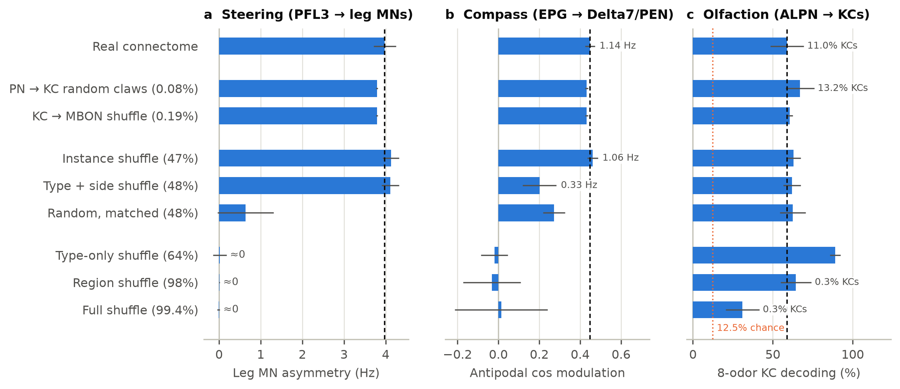
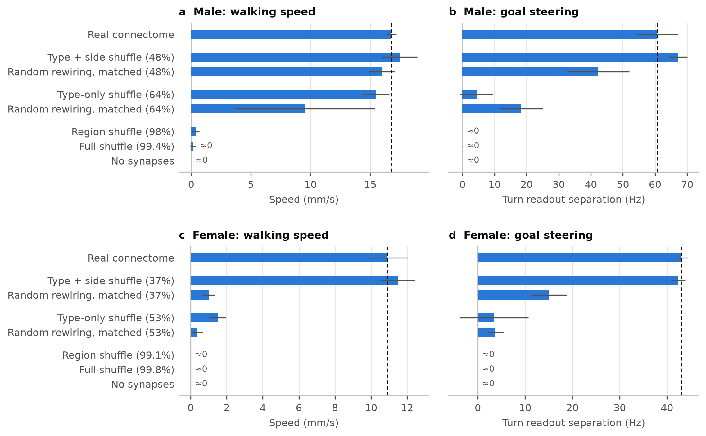
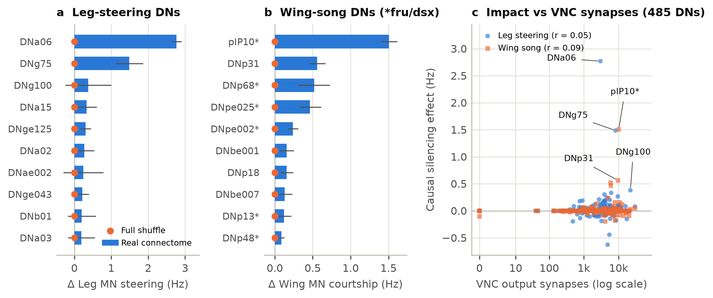
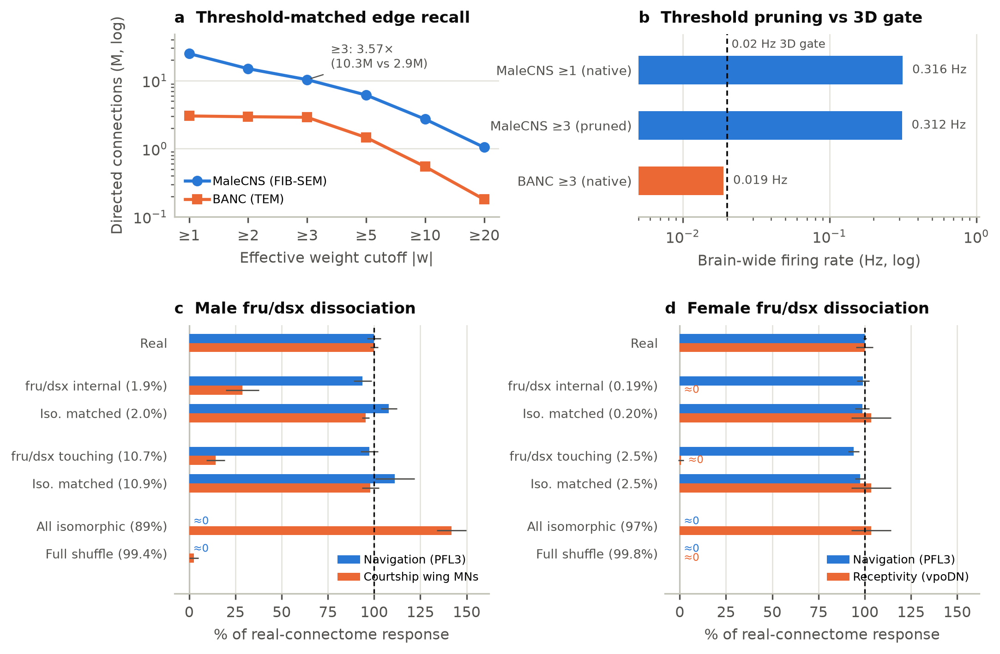

Complete synapse-resolution connectomes of the adult Drosophila central nervous system (CNS) link sensory inputs, central brain circuits, descending pathways and ventral-nerve-cord (VNC) motor pools within a single graph, yet it remains unclear what granularity of synaptic wiring different computations actually require, how efficiently whole-CNS models can screen causal bottlenecks, and how to compare male and female reconstructions acquired by different electron-microscopy (EM) modalities. Here we address these questions using a GPU-accelerated leaky integrate-and-fire (LIF) simulator of the male CNS (MaleCNS v1.0; 167,565 neurons, 25.6 million directed connections) and of the female brain-and-nerve-cord connectome (BANC v888; 157,789 neurons, 3.0 million connections), paired with hierarchy-structured Maslov–Sneppen null models that preserve every neuron’s exact in-degree, out-degree, outgoing synapse weights and neurotransmitter sign. First, probing three canonical circuits under identical noisy LIF dynamics reveals a three-tier hierarchy of wiring specificity within the same male CNS: mushroom-body odor expansion from eight antennal-lobe glomeruli to 4,064 Kenyon cells tolerates complete randomization of projection-to-Kenyon-cell claws (67.0% versus 59.0% eight-odor decoding), descending motor steering (PFL3 to steering descending and 815 leg motor neurons) requires hemisphere-specific cell-type connectivity (surviving a 48% type-and-side shuffle at 4.11 versus 3.98 Hz in leg motor neurons, collapsing to 0.02 Hz under type-only shuffling), and central-complex compass transmission from eight EPG wedges to 44 Delta7 and PEN glomerular instances requires sub-type glomerular identity (dropping from 1.06 to 0.33 Hz and from 0.46 to 0.20 circular cosine modulation between instance and type-and-side shuffles that differ across only 0.67% of CNS connections), although fast homogeneous synapses do not sustain an autonomous memory bump after stimulus offset (3.8% persistence). Second, closed-loop 3D walking in NeuroMechFly v2 confirms across both sexes that cell-type-by-hemisphere connectivity suffices for goal-directed steering whereas midline-mixing type-only shuffles abolish steering and region or full shuffles silence brain-wide drive below the locomotor gate. Third, executing a Common-Random-Numbers (CRN) virtual Split-GAL4 silencing screen across K = 486 parallel whole-CNS slots on a single GPU tests all 485 named descending-neuron cell types in 17.2 s against strictly non-overlapping VNC motor pools, identifying DNa06 (90% loss) and DNg75 as primary leg-motor asymmetry bottlenecks and blindly recovering pIP10 first overall for courtship wing drive (47% loss), uncorrelated with VNC output synapse count (r = 0.05–0.09). Finally, an EM threshold-recall audit shows that FIB-SEM MaleCNS retains 3.57× more connections than GridTape TEM BANC even at a matched |w| ≥ 3 cutoff, precluding direct cross-dataset firing-rate comparisons, whereas targeted rewiring of genetically annotated fru/dsx subgraphs strictly within each connectome symmetrically double-dissociates male courtship song and sensory gating and female vpoDN receptivity from shared navigation circuitry.
Synapse-resolution electron-microscopy (EM) reconstructions now span the adult Drosophila central brain [1,2], the female brain and ventral nerve cord (BANC) [3], and the complete male central nervous system (MaleCNS v1.0) [4]. Connectome-constrained dynamical models have begun turning these static wiring diagrams into testable physiological predictions. A whole-brain leaky integrate-and-fire (LIF) model parameterized solely by synapse counts and neurotransmitter signs predicted feeding and grooming circuit elements verified in vivo [5], cell-type-constrained networks accurately predict visual-system responses [6], and biomechanical frameworks such as NeuroMechFly v2 allow neural models to close the sensorimotor loop in 3D physics [7].
Despite rapid progress in simulating whole-CNS graphs [8], three foundational questions remain unresolved. First, what level of anatomical specificity does a whole-CNS spiking network actually use? Developmental and anatomical studies suggest sharply different wiring rules across brain regions: olfactory projection neurons converge onto mushroom-body Kenyon cells through largely unstructured claws [9,10], descending steering circuits map lateralized central-complex outputs onto bilateral motor relays [11,12], and the central-complex head-direction system organizes EPG, Delta7 and PEN neurons into precise glomerular phase columns around a ring [13,14,15]. Degree-preserving graph randomizations [16] offer a rigorous way to test whether these circuits truly operate at different rungs of structural specificity inside a single whole-CNS simulation, and where static topology runs into biophysical limits.
Second, descending neurons form a compact bottleneck of roughly five hundred cell types carrying commands from the brain to VNC motor networks [3,4,12,17]. Experimentally screening every descending cell type across multiple behaviors with Split-GAL4 driver lines is labor-intensive, whereas serial in silico perturbations under independent Poisson background noise suffer from trial-to-trial variance unless many repeats are averaged. Because every perturbation acts on the same underlying connectome, a GPU simulator that shares one sparse connection matrix across K parallel state vectors under Common Random Numbers (CRN) can in principle silence every named descending-neuron cell type simultaneously against identical millisecond-by-millisecond noise realizations — provided causal impact is measured on strictly non-overlapping VNC motor pools rather than on descending readout neurons themselves.
Third, the availability of both MaleCNS v1.0 [4] and Female BANC [3] invites comparative simulations of sexually dimorphic circuits controlled by fruitless (fru) and doublesex (dsx), including male pIP10 courtship song and mAL sensory gating [17,18] and female vpoDN sexual receptivity [19]. However, MaleCNS was imaged by isotropic 8 nm focused-ion-beam scanning EM (FIB-SEM, compiled at ≥ 1 synapse) whereas BANC was imaged by serial-section GridTape transmission EM (TEM, compiled at ≥ 3 synapses). Whether nominal synapse-threshold matching equalizes global connectivity and firing rates across EM modalities — or whether isolating sexually dimorphic routing requires subgraph counterfactuals strictly within each connectome — has not been systematically tested.
Here we combine a nested nine-level Maslov–Sneppen null-model hierarchy, closed-loop 3D NeuroMechFly v2 simulations, a single-pass K = 486 CRN virtual Split-GAL4 descending-neuron screen, and threshold-audited within-connectome fru/dsx subgraph dissections across MaleCNS v1.0 and Female BANC v888 to address all three questions in a unified computational framework.
The adult male whole-CNS graph is MaleCNS v1.0 [4], reconstructed by isotropic 8 nm FIB-SEM and compiled into 167,565 proofread neurons and 25,623,478 directed connections (124,174,455 synapses) retaining connections of one or more synapses. The adult female brain-and-VNC graph is BANC v888 [3], reconstructed by serial-section GridTape TEM and compiled into 157,789 neurons and 3,036,600 directed connections (23,553,107 synapses) at a minimum threshold of three synapses per connection. Each directed connection weight equals its synapse count, capped at 400, multiplied by the Dale’s-law neurotransmitter sign predicted for the presynaptic neuron (+1 cholinergic, −1 GABAergic or glutamatergic inhibitory in the central brain, following [5]). Metadata tables assign each neuron its cell type, sub-type glomerular or wedge instance, soma side (left, right, midline or unassigned), anatomical region (central brain, optic lobes, VNC, descending, ascending), motor-neuron identity and fru/dsx or sexual-dimorphism annotations.
Neurons evolve as leaky integrate-and-fire units parameterized after Shiu et al. [5]: resting and reset potential −52 mV, spike threshold −45 mV, refractory period 2.2 ms, membrane time constant τ = 20 ms, exponential synaptic time constant 5 ms and unitary synaptic efficacy 0.275 mV per synapse (scaled by 0.66 in closed-loop 3D walking episodes). Dynamics are integrated in 1 ms steps with event-driven propagation of active presynaptic rows across a single compressed-sparse-row (CSR) connection matrix on CPU or via a coalesced CUDA Triton active-row gather–scatter kernel on GPU.
To execute massive perturbation screens without duplicating the sparse connectome in GPU memory, the engine maintains K independent state arrays (membrane voltage, synaptic currents, refractory timers and per-slot perturbation masks) sharing one read-only CSR matrix (< 450 MB VRAM at K = 100, > 45× compression relative to unshared matrices). All open-loop circuit, screening and dimorphism assays use a uniform 20 ms membrane time constant across neurons and zero inter-slot coupling. When Common Random Numbers (common_random_numbers=True) is enabled, one Poisson background draw is broadcast across all K slots each millisecond so unperturbed slots follow bit-identical voltage and spike trajectories (0.000000 Hz maximum spread across GPU slots), isolating the exact causal effect of each slot’s perturbation.
Every null model permutes CSR target column indices strictly within specified equivalence classes while leaving row pointers and outgoing synapse weights untouched. Consequently, every neuron preserves its exact out-degree, exact in-degree, exact multiset of outgoing synapse weights and presynaptic transmitter sign [16]. Whenever a graph is rewired on CPU, cached GPU CSR index buffers are synchronized in place and verified byte-for-byte prior to simulation. From most local to most global, the nine randomization operators are:
PN → KC random claws and KC → MBON shuffle): permute all 22,586 olfactory projection-neuron-to-Kenyon-cell connections (ALPN → KC) in one degree-preserving block across glomeruli and hemispheres [9], or permute all KC → MBON connections across compartments [10], leaving the remaining 99.8–99.9% of CNS connections intact.(cell type, soma side, instance) equivalence classes at both presynaptic and postsynaptic ends, preserving glomerular wedge labels (such as EPG(PB08)_L5 or Delta7(PB15)_L5R4_L) while shuffling sister neurons within each sub-type instance.(cell type, soma side) blocks at both ends, preserving hemisphere-specific cell-type connectivity while scrambling sub-type glomerular or wedge topography.type + side, 64% for type-only in MaleCNS; 37% and 53% in BANC).(presynaptic cell type, postsynaptic cell type) blocks without hemisphere labels, mixing left and right copies of bilateral cell types across the midline.fru/dsx internal) or at least one endpoint (fru/dsx touching) carry fru, dsx or sexual-dimorphism annotations, paired against edge-count-matched permutations drawn strictly from fru−/dsx− isomorphic connections and against an all isomorphic complement shuffle that rewires every purely isomorphic connection (88.6% of MaleCNS, 97.3% of BANC) while leaving all fru/dsx-touching connections untouched.Three canonical circuits were evaluated in MaleCNS v1.0 across five independent rewire seeds and five noisy trials per stimulus class (20 Hz background Poisson input on plastic/central subpopulations, 60 ms stimulation window):
EPG(PB08)_L1..8 paired with R8..1), read out across 44 glomerular Delta7 (12) and PEN (32) instances, followed immediately by a 50 ms stimulus-off window to quantify autonomous EPG bump persistence (off-window rate divided by on-window rate). Circular ring geometry was measured by antipodal cosine modulation (mean trial-to-centroid cosine similarity at 45° adjacent wedges minus 180° opposite wedges).Multi-class population coding across the eight compass wedges or eight odors was evaluated by leave-one-trial-out nearest-centroid cosine decoding; whenever a test trial or class centroid had zero norm, exact uniform chance (1/8 = 12.5%) was assigned so silent networks could not score above chance by tie-breaking.
Closed-loop 3D locomotion was evaluated using NeuroMechFly v2 [7] in FlyGym 2.1.1 and MuJoCo 3.16 (0.1 ms physics integration step, 0.48 s episodes) for single-connectome (K = 1) MaleCNS v1.0 and Female BANC v888 models walking toward a spatial target 6.2 mm ahead and laterally offset (n = 3 episodes for real and zero-synapse controls; n = 9 episodes across three rewire seeds for each shuffled condition). At each control frame, geometric target bearing stimulated left- or right-turn PFL3 neurons. To interface spiking VNC outputs with the 63-degree-of-freedom body transparently, joint trajectories were generated by a tripod gait oscillator whose forward drive (0.780 base plus graded terms from VNC leg-motor and descending firing rates) was gated to zero whenever brain-wide firing fell below 0.02 Hz and leg-motor firing fell below 0.1 Hz. Left–right stride asymmetry followed the steering descending readout clipped at 16.7 Hz, and 42 muscle-group VNC motor pools modulated individual leg joint amplitudes by up to 16%.
For the comprehensive descending-neuron screen, all 485 named descending-neuron cell types in MaleCNS v1.0 were mapped and assigned to slots 1–485 of a K = 486 CRN engine alongside an unperturbed wild-type control in slot 0. Acute genetic silencing (modeling Kir2.1 + TNT co-expression) clamped silenced neurons to reset voltage and zeroed their outgoing synaptic transmission. Across five CRN seeds (80 ms windows), causal silencing loss (Δ Hz, wild type minus silenced) was measured on strictly non-overlapping VNC motor pools: bilateral asymmetry across 815 leg motor neurons during PFL3 steering, and mean firing rate across 495 wing motor neurons during multimodal courtship drive (LC10a_R + VA1v sensory input paired with P1/pC1/aIPg arousal), alongside comparison against the eight-neuron-per-side turn_hz descending readout and full re-runs on type + side and full shuffled graphs.
For the cross-modality EM recall audit, directed connection counts and mean out-degrees in MaleCNS v1.0 and Female BANC v888 were tabulated across matched effective weight cutoffs |w| ≥ 1, 2, 3, 5, 10, 20, and MaleCNS was functionally evaluated after pruning all connections with |w| < 3. Within-connectome fru/dsx double-dissociation experiments (five rewire seeds × five noisy trials, 80 ms windows) compared PFL3 navigation steering against aroused courtship (pIP10 and 495 VNC wing motor neurons) and unaroused sensory gating (LC10a_R + VA1v without P1/pC1 arousal onto pIP10) in MaleCNS, and against vpoDN receptivity command firing (pC1a–e + JO-B mechanosensory input) in Female BANC.
Continuous metrics across null-model conditions were compared using two-sided Mann–Whitney U tests (uncorrected across seeds), and relationships between VNC synapse counts and causal silencing effects across the 485 descending-neuron types were quantified with Pearson r and Spearman ρ. Closed-loop 3D CPU worker pools ran on multi-core x86 workstations, and the complete GPU specificity hierarchy, K = 486 CRN descending-neuron screen, threshold audit and fru/dsx double-dissociation suite executed on an NVIDIA RTX PRO 6000 Blackwell Server Edition (G4, 95 GB VRAM) GPU using CUDA Triton.
To test whether a single granularity of synaptic connectivity governs diverse computations within the same nervous system, we probed descending motor steering, the central-complex head-direction ring and mushroom-body olfactory expansion under identical noisy LIF dynamics (20 ms membrane time constant, 5 ms synaptic time constant, 20 Hz background input) across nine nested degree-, weight- and sign-preserving randomizations of MaleCNS v1.0 (Figure 1, Table 1). Rather than collapsing at a common threshold, the three circuits separated cleanly onto three distinct rungs of the null-model hierarchy.

| Condition | Structure kept | Rewired | Steer DN (Hz) | Leg MN (Hz) | CX cos mod | CX dec. | CX rate | KC active | KC dec. | MBON dec. |
|---|---|---|---|---|---|---|---|---|---|---|
| Real connectome | all | 0% | 64.7 ± 1.0 | 3.98 ± 0.27 | 0.45 ± 0.02 | 86.8% | 1.14 | 11.0% | 59.0% | 35.1% |
| PN → KC random claws | all except ALPN → KC | 0.08% | 63.2 ± 1.8 | 3.79 ± 0.02 | 0.43 ± 0.01 | 92.6% | 1.24 | 13.2% | 67.0% | 36.1% |
| KC → MBON shuffle | all except KC → MBON | 0.19% | 63.2 ± 1.8 | 3.79 ± 0.02 | 0.43 ± 0.01 | 92.6% | 1.24 | 11.0% | 60.5% | 35.1% |
| Instance shuffle | (type, side, wedge)² | 47% | 67.2 ± 3.1 | 4.13 ± 0.19 | 0.46 ± 0.03 | 88.1% | 1.06 | 13.0% | 63.0% | 31.6% |
| Type + side shuffle | (type, side)² | 48% | 67.9 ± 1.7 | 4.11 ± 0.21 | 0.20 ± 0.08 | 70.9% | 0.33 | 12.9% | 62.0% | 24.6% |
| Random, matched | degrees only | 48% | 51.0 ± 10.5 | 0.64 ± 0.67 | 0.27 ± 0.05 | 93.9% | 2.56 | 4.6% | 62.5% | 54.2% |
| Type-only shuffle | type × type | 64% | 4.8 ± 4.3 | 0.02 ± 0.16 | −0.02 ± 0.07 | 60.6% | 0.28 | 15.0% | 89.0% | 34.1% |
| Region shuffle | region × region | 98% | 0.0 ± 0.0 | 0.01 ± 0.01 | −0.03 ± 0.14 | 14.9% | 0.06 | 0.3% | 64.5% | 27.4% |
| Full shuffle | degrees only | 99.4% | 0.0 ± 0.0 | −0.01 ± 0.03 | 0.01 ± 0.23 | 13.5% | 0.04 | 0.3% | 31.0% | 19.1% |
At the coarsest rung, mushroom-body odor expansion across 4,064 Kenyon cells was invariant to glomerular claw identity [9]. Permuting 100% of the 22,586 ALPN → KC connections in a single degree-preserving block (0.08% of all CNS connections) kept Kenyon-cell activation sparse (13.2% versus 11.0% active Kenyon cells in the native graph) and caused no degradation in noisy eight-odor cosine decoding across Kenyon cells (67.0% versus 59.0% native; uniform chance 12.5%) or across the 37 downstream MBON cell types (36.1% versus 35.1% native). Permuting all KC → MBON connections in the naive state likewise left baseline MBON odor separability unchanged (35.1%, Mann–Whitney p = 1.0), consistent with MBON compartmentalization supporting dopamine-gated valence assignment [10] rather than naive odor discriminability. Sparse odor coding survived instance (63.0%), type + side (62.0%) and even midline-mixing type-only shuffles (15.0% active Kenyon cells, 89.0% decoding), collapsing only when region (98% rewired) and full (99.4% rewired) shuffles scattered ALPN axons outside the mushroom-body calyx, reducing active Kenyon cells 34- to 42-fold (0.3%) and dropping full-shuffle MBON decoding to 19.1%.
At the middle rung, descending motor steering from PFL3 to steering descending neurons and 815 VNC leg motor neurons required hemisphere-specific cell-type connectivity, but no finer sub-type targeting. Both instance (47% rewired) and type + side (48% rewired) shuffles preserved steering descending separation (67.2 ± 3.1 and 67.9 ± 1.7 Hz versus 64.7 ± 1.0 Hz native) and downstream VNC leg-motor asymmetry (4.13 ± 0.19 and 4.11 ± 0.21 Hz versus 3.98 ± 0.27 Hz native). By contrast, fraction-matched 48% global random rewiring cut downstream VNC leg-motor asymmetry sixfold to 0.64 ± 0.67 Hz (Mann–Whitney p = 0.0079), and type-only shuffling (64% rewired) abolished steering completely (4.8 ± 4.3 Hz at steering descending neurons and 0.02 ± 0.16 Hz at leg motor neurons; p = 0.0079), because bilateral cell types such as PFL3 (12 per hemisphere) and DNa02 (1 per hemisphere) cancel left–right directional sign when pooled across the midline.
At the finest rung, central-complex heading transmission from eight circular ellipsoid-body EPG wedges to 44 glomerular Delta7 and PEN instances [13,14,15] broke sharply between the instance shuffle (47.34% rewired) and the type + side shuffle (48.01% rewired) — two randomizations that differ across only 0.67% of CNS connections. Shuffling sister neurons strictly within (cell type, soma side, glomerular wedge) preserved Delta7/PEN firing rate (1.06 versus 1.14 Hz native; p = 0.22), circular antipodal cosine modulation (0.46 ± 0.03 versus 0.45 ± 0.02 native) and eight-wedge decoding (88.1% versus 86.8% native). Collapsing wedge instance labels into (cell type, soma side) — the exact randomization under which PFL3 leg-motor steering remained fully intact — cut Delta7/PEN firing more than threefold to 0.33 Hz (p = 0.0079), halved circular antipodal modulation to 0.20 ± 0.08 (p = 0.0079) and reduced wedge decoding to 70.9% (p = 0.036; residual above-chance decoding reflects unequal left- versus right-hemisphere EPG counts across wedges, and vanished to −0.02 ± 0.07 cosine modulation under type-only shuffling and 13.5–14.9% decoding under region and full shuffles). Fraction-matched 48% random rewiring exhibited the complementary failure mode, preserving 93.9% wedge decoding from the 52% unrewired glomerular synapses while disinhibiting EPG firing (99.3 versus 72.1 Hz) and degrading circular ring geometry (0.27 ± 0.05 cosine modulation). Measuring the 50 ms post-stimulus window also revealed a clear biophysical boundary: in both native and instance-shuffled graphs, EPG firing dropped from 68.0–72.1 Hz during cue delivery to 2.5–2.7 Hz after cue offset (3.6–3.8% persistence), demonstrating that static ring-attractor anatomy routes topographic phase under fast homogeneous LIF synapses but requires slower synaptic or intrinsic conductances to sustain an autonomous memory bump.
To test whether the hemisphere-by-cell-type rule for descending steering generalizes from open-loop VNC probes to closed-loop 3D biomechanics across both sexes, we coupled single-copy MaleCNS v1.0 and Female BANC v888 models to NeuroMechFly v2 [7] in MuJoCo during 0.48 s goal-directed walking episodes across the null-model ladder (Figure 2, Table 2).

| Sex | Condition | Rewired | Speed (mm/s) | Target progress | Forward drive | Goal signal (Hz) |
|---|---|---|---|---|---|---|
| Male | Real connectome | 0% | 16.77 ± 0.42 | 68.0% | 0.821 | 60.7 ± 6.4 |
| Type + side shuffle | 48% | 17.46 ± 1.48 | 75.1% | 0.812 | 67.1 ± 2.9 | |
| Random, matched | 48% | 15.96 ± 1.07 | 66.1% | 0.775 | 42.2 ± 9.8 | |
| Type-only shuffle | 64% | 15.47 ± 1.12 | 51.1% | 0.780 | 4.4 ± 5.1 | |
| Random, matched | 64% | 9.52 ± 5.87 | 38.2% | 0.480 | 18.3 ± 6.7 | |
| Region shuffle | 98% | 0.37 ± 0.31 | 1.4% | 0.010 | 0.0 ± 0.0 | |
| Full shuffle | 99.4% | 0.15 ± 0.23 | 0.7% | 0.004 | 0.0 ± 0.0 | |
| No synapses | — | 0.01 ± 0.00 | 0.1% | 0.000 | 0.0 ± 0.0 | |
| Female | Real connectome | 0% | 10.91 ± 1.13 | 42.0% | 0.536 | 43.1 ± 1.2 |
| Type + side shuffle | 37% | 11.47 ± 0.97 | 44.2% | 0.559 | 42.4 ± 1.5 | |
| Random, matched | 37% | 0.99 ± 0.35 | 3.4% | 0.037 | 15.0 ± 3.7 | |
| Type-only shuffle | 53% | 1.50 ± 0.46 | 4.9% | 0.071 | 3.5 ± 7.2 | |
| Random, matched | 53% | 0.34 ± 0.34 | 1.2% | 0.008 | 3.7 ± 1.7 | |
| Region shuffle | 99.1% | 0.01 ± 0.00 | 0.1% | 0.000 | 0.0 ± 0.0 | |
| Full shuffle | 99.8% | 0.01 ± 0.00 | 0.1% | 0.000 | 0.0 ± 0.0 | |
| No synapses | — | 0.01 ± 0.00 | 0.1% | 0.000 | 0.0 ± 0.0 |
In both sexes, type + side shuffling (48% of MaleCNS and 37% of BANC connections rewired) fully preserved 3D walking speed (17.46 ± 1.48 versus 16.77 ± 0.42 mm/s in the male; 11.47 ± 0.97 versus 10.91 ± 1.13 mm/s in the female), progress toward the 6.2 mm goal (75.1% versus 68.0% in the male; 44.2% versus 42.0% in the female) and directional steering separation (67.1 ± 2.9 versus 60.7 ± 6.4 Hz in the male; 42.4 ± 1.5 versus 43.1 ± 1.2 Hz in the female). Removing hemisphere labels in the type-only shuffle (64% male, 53% female rewired) abolished directional steering in both connectomes (4.4 ± 5.1 Hz in the male; 3.5 ± 7.2 Hz in the female), reducing male target progress to unsteered forward walking (51.1% at 15.47 ± 1.12 mm/s).
Examining the biomechanical controller variables alongside the null ladder also clarified how whole-CNS spiking interacts with the 3D gait interface. Because leg joint kinematics are driven by a tripod gait oscillator gated on when brain-wide activity exceeds 0.02 Hz, the male connectome’s graded motor contribution raised forward drive modestly above the 0.780 oscillator base (0.821 native, 0.812 type + side), whereas region (98% rewired) and full (99.4% rewired) shuffles collapsed recurrent brain-wide firing below the 0.02 Hz gate and halted locomotion (0.37 ± 0.31 and 0.15 ± 0.23 mm/s in the male; 0.01 ± 0.00 mm/s in the female, matching the zero-synapse control). Fraction-matched global random rewiring exposed a pronounced baseline sensitivity difference between the two reconstructions: rewiring 48% of MaleCNS connections left brain-wide activity comfortably above the locomotor gate (15.96 ± 1.07 mm/s, forward drive 0.775, steering degraded to 42.2 ± 9.8 Hz), whereas rewiring 37% of BANC connections already dropped female forward drive from 0.536 to 0.037 and walking speed from 10.91 to 0.99 ± 0.35 mm/s — a cross-dataset offset we dissect directly below.
Sharing one CSR connectivity matrix across K independent state vectors under Common Random Numbers (0.000000 Hz maximum trajectory difference across unperturbed GPU slots) enabled an exhaustive, noise-matched virtual Split-GAL4 silencing screen across all 485 named descending-neuron cell types in MaleCNS v1.0 (slot 0 intact wild type, slots 1–485 single-type acute Kir2.1 + TNT silencing; five CRN seeds completed in 17.2 s on a single G4 GPU; Figure 3, Table 3).

| Assay | DN type | n | VNC syn. | fru/dsx | Δ Leg MN (Hz) | Δ Turn DN | Δ Wing MN (Hz) | Type+side Δ | Full null Δ |
|---|---|---|---|---|---|---|---|---|---|
| Steering | DNa06 | 2 | 3,007 | no | 2.77 ± 0.13 | −0.1 | 0.00 ± 0.00 | 2.74 | 0.00 |
| DNg75 | 2 | 8,120 | no | 1.49 ± 0.37 | 3.6 | 0.00 ± 0.00 | 1.27 | 0.00 | |
| DNg100 | 2 | 21,714 | no | 0.38 ± 0.62 | 7.9 | 0.03 ± 0.14 | −0.01 | 0.00 | |
| DNa15 | 2 | 6,090 | no | 0.33 ± 0.28 | −1.8 | 0.00 ± 0.00 | 0.14 | 0.00 | |
| DNge125 | 2 | 3,900 | no | 0.30 ± 0.15 | 1.3 | 0.00 ± 0.00 | 0.37 | 0.00 | |
| DNa02 | 2 | 9,465 | no | 0.27 ± 0.27 | 8.2 | 0.00 ± 0.00 | −0.28 | 0.00 | |
| DNb01 | 2 | 5,543 | no | 0.20 ± 0.38 | 18.8 | 0.00 ± 0.00 | −0.24 | 0.00 | |
| Courtship | pIP10 | 2 | 10,023 | yes | 0.00 ± 0.00 | 0.0 | 1.51 ± 0.11 | 1.54 | 0.00 |
| DNp31 | 2 | 9,628 | no | 0.10 ± 0.14 | 0.7 | 0.56 ± 0.10 | 0.50 | 0.00 | |
| DNp68 | 2 | 5,870 | yes | 0.08 ± 0.08 | −0.3 | 0.52 ± 0.21 | 0.59 | 0.00 | |
| DNpe025 | 2 | 5,966 | yes | 0.00 ± 0.00 | 0.0 | 0.46 ± 0.14 | 0.37 | 0.00 | |
| DNpe002 | 2 | 4,985 | yes | 0.00 ± 0.00 | 0.0 | 0.24 ± 0.07 | 0.14 | 0.00 | |
| DNbe001 | 2 | 7,850 | no | 0.04 ± 0.04 | 0.0 | 0.16 ± 0.10 | 0.19 | 0.00 |
Comparing readouts during PFL3 steering demonstrated why in silico perturbation screens must measure downstream motor pools that do not overlap candidate silenced neurons. When steering loss was scored on the eight-neuron-per-side turn_hz descending pool (wild type: 60.9 Hz), the largest apparent deficits occurred for DNb01 (Δ = 18.8 Hz), DNb02 (17.9 Hz) and DNa02 (8.2 Hz) [12], in large part because silencing a member of the readout pool trivially removes its own spikes, alongside genuine recurrent contributions from DNg100 (7.9 Hz) and DNg97 (6.6 Hz). Scoring causal impact instead on the strictly disjoint population of 815 VNC leg motor neurons (wild-type bilateral asymmetry: 3.06 Hz) revealed a distinct hierarchy led by bilateral cholinergic types DNa06 (Δ = 2.77 ± 0.13 Hz, eliminating 90% of wild-type leg-motor asymmetry despite Δ = −0.1 Hz on the descending readout) and DNg75 (Δ = 1.49 ± 0.37 Hz, 49% loss), followed by DNg100 (0.38 ± 0.62 Hz), DNa15 (0.33 ± 0.28 Hz), DNge125 (0.30 ± 0.15 Hz) and DNa02 (0.27 ± 0.27 Hz, rank 6), whereas DNb01 had modest impact on leg motor asymmetry (0.20 ± 0.38 Hz, rank 9).
In the multimodal courtship assay (wild-type firing across 495 VNC wing motor neurons: 3.21 Hz), blind screening of all 485 descending-neuron types recovered the canonical male courtship-song command type pIP10 (two male-specific fru+ neurons) [17] in first place (Δ = 1.51 ± 0.11 Hz, removing 47% of total wing-motor drive), followed by DNp31 (0.56 ± 0.10 Hz) and three fru+/dimorphic cell types: DNp68 (0.52 ± 0.21 Hz), DNpe025 (0.46 ± 0.14 Hz) and DNpe002 (0.24 ± 0.07 Hz). Across all 485 descending cell types, causal silencing impact was virtually uncorrelated with total VNC output synapse count for both leg steering (Pearson r = 0.048, Spearman ρ = 0.107) and wing drive (Pearson r = 0.088, Spearman ρ = 0.015, p = 0.74): for instance, DNa06 (3,007 VNC synapses) exerted more than seven times the leg-steering impact of DNg100 (21,714 synapses). Repeating the entire K = 486 screen on type + side shuffled connectomes preserved the primary bottlenecks (DNa06: 2.74 Hz; pIP10: 1.54 Hz), whereas full shuffling collapsed all causal effects to 0.00 Hz.
Why did Female BANC sit close to the 0.02 Hz locomotor activity gate in 3D simulations while MaleCNS remained far above it? Tabulating surviving connections across matched effective weight cutoffs |w| ≥ 1..20 (Figure 4 a–b, Table 4) ruled out the hypothesis that BANC’s three-synapse compilation threshold alone explains the gap. At |w| ≥ 1, MaleCNS contained 8.24× as many directed connections as BANC (24,923,688 versus 3,024,654); at the matched |w| ≥ 3 cutoff, MaleCNS still retained 10,326,400 connections versus 2,892,647 in BANC (3.57×; mean out-degree 61.6 versus 18.3), and the ratio widened at stronger cutoffs (4.98× at |w| ≥ 10 and 5.81× at |w| ≥ 20). Pruning MaleCNS to |w| ≥ 3 removed 58.6% of its directed connections yet left both open-loop PFL3 steering (64.1 versus 65.8 Hz native) and brain-wide firing rate (0.312 versus 0.316 Hz native, more than 15× above the 0.02 Hz 3D gate) nearly unchanged, whereas native BANC at |w| ≥ 3 fired at 0.019 Hz. Differences in ultrastructural imaging and automated synapse recall between isotropic 8 nm FIB-SEM (MaleCNS) and serial-section GridTape TEM (BANC) thus dominate global network drive even at identical nominal weight thresholds.
| Cutoff |w| | MaleCNS edges | Male out-deg. | BANC edges | Female out-deg. | Male / female |
|---|---|---|---|---|---|
| ≥ 1 | 24,923,688 | 148.7 | 3,024,654 | 19.2 | 8.24× |
| ≥ 2 | 14,953,030 | 89.2 | 2,947,169 | 18.7 | 5.07× |
| ≥ 3 | 10,326,400 | 61.6 | 2,892,647 | 18.3 | 3.57× |
| ≥ 5 | 6,138,507 | 36.6 | 1,460,987 | 9.3 | 4.20× |
| ≥ 10 | 2,712,151 | 16.2 | 544,708 | 3.5 | 4.98× |
| ≥ 20 | 1,046,887 | 6.2 | 180,093 | 1.1 | 5.81× |
To test sexually dimorphic circuit organization without comparing firing rates across incompatible EM modalities, we performed targeted degree-, weight- and sign-preserving shuffles of genetically annotated fru+/dsx+/dimorphic subgraphs strictly within each connectome, benchmarked against edge-count-matched shuffles of fru−/dsx− isomorphic connections and against all isomorphic complement shuffles (Figure 4 c–d, Table 5).

| Sex | Condition | Rewired | Nav. steer (Hz) | pIP10 / vpoDN (Hz) | pIP10 leak (Hz) | Wing MN (Hz) |
|---|---|---|---|---|---|---|
| Male | Real connectome | 0% | 59.8 ± 2.2 | 176.2 ± 2.5 | 1.0 ± 1.6 | 3.14 ± 0.07 |
| fru/dsx internal | 1.9% | 56.1 ± 2.9 | 76.2 ± 30.9 | 22.8 ± 17.7 | 0.91 ± 0.28 | |
| Iso. matched | 2.0% | 64.6 ± 2.6 | 177.5 ± 2.7 | 0.5 ± 0.7 | 3.00 ± 0.07 | |
| fru/dsx touching | 10.7% | 58.3 ± 2.8 | 23.2 ± 15.2 | 1.2 ± 2.8 | 0.45 ± 0.16 | |
| Iso. matched | 10.9% | 66.5 ± 6.3 | 176.2 ± 2.3 | 0.0 ± 0.0 | 3.08 ± 0.14 | |
| All isomorphic | 89% | 0.0 ± 0.0 | 181.0 ± 3.1 | 1.2 ± 2.8 | 4.46 ± 0.25 | |
| Full shuffle | 99.4% | 0.0 ± 0.0 | 0.0 ± 0.0 | 0.0 ± 0.0 | 0.08 ± 0.08 | |
| Female | Real connectome | 0% | 49.2 ± 0.5 | 35.2 ± 1.6 | — | — |
| fru/dsx internal | 0.19% | 48.7 ± 1.6 | 0.0 ± 0.0 | — | — | |
| Iso. matched | 0.20% | 48.5 ± 1.9 | 36.5 ± 3.8 | — | — | |
| fru/dsx touching | 2.5% | 46.2 ± 1.5 | 0.2 ± 0.6 | — | — | |
| Iso. matched | 2.5% | 48.0 ± 1.4 | 36.5 ± 3.8 | — | — | |
| All isomorphic | 97% | 0.0 ± 0.0 | 36.5 ± 3.8 | — | — | |
| Full shuffle | 99.8% | 0.0 ± 0.0 | 0.0 ± 0.0 | — | — |
In MaleCNS v1.0, 5,933 neurons (3.54% of the CNS) carry fru+/dsx+/dimorphic annotations, encompassing 1.9% of CNS connections where both endpoints are annotated (fru/dsx internal) and 10.7% touching at least one annotated neuron (fru/dsx touching). Rewiring only the 1.9% internal fru/dsx connections preserved PFL3 navigation steering (56.1 ± 2.9 versus 59.8 ± 2.2 Hz native), reduced aroused pIP10 firing from 176.2 ± 2.5 to 76.2 ± 30.9 Hz and VNC wing motor firing from 3.14 ± 0.07 to 0.91 ± 0.28 Hz, and selectively disrupted mAL-like sensory gating [18]: unaroused visual and pheromone stimulation (LC10a_R + VA1v without P1/pC1 drive), which normally evokes almost no pIP10 activity (1.0 ± 1.6 Hz), leaked onto pIP10 at 22.8 ± 17.7 Hz (Mann–Whitney p = 0.011 versus native; 0.5 ± 0.7 Hz in the 2.0% matched isomorphic shuffle). Rewiring all 10.7% fru/dsx-touching connections collapsed aroused pIP10 activity by 87% (23.2 ± 15.2 Hz; p = 0.012 versus 176.2 ± 2.3 Hz in the 10.9% matched isomorphic control) and VNC wing motor drive by 86% (0.45 ± 0.16 Hz; p = 0.0079 versus 3.08 ± 0.14 Hz matched isomorphic) while sparing PFL3 navigation (58.3 ± 2.8 Hz). Conversely, rewiring all purely isomorphic connections (89% of the male CNS) while preserving fru/dsx-touching connections abolished navigation steering (0.0 ± 0.0 Hz; p = 0.011) while leaving pIP10 (181.0 ± 3.1 Hz) and VNC wing motor drive (4.46 ± 0.25 Hz) intact.
An exact mirror double dissociation emerged inside Female BANC v888, where 2,718 neurons (1.72% of the CNS) carry fru/dsx/dimorphic annotations. Rewiring either the 0.19% internal fru/dsx connections or the 2.5% fru/dsx-touching connections abolished vpoDN vaginal-plate-opening command firing [19] under pC1 plus JO-B song-sensory stimulation (from 35.2 ± 1.6 Hz to 0.0 ± 0.0 Hz and 0.2 ± 0.6 Hz; p = 0.0097 versus 36.5 ± 3.8 Hz in the 2.5% matched isomorphic shuffle) while preserving PFL3 navigation steering (48.7 ± 1.6 and 46.2 ± 1.5 Hz versus 49.2 ± 0.5 Hz native). Conversely, rewiring all 97% purely isomorphic connections in BANC abolished navigation steering (0.0 ± 0.0 Hz; p = 0.011) while leaving vpoDN receptivity firing intact (36.5 ± 3.8 Hz).
Applying hierarchy-structured null models, Common-Random-Numbers parallel screening and within-connectome subgraph dissections to whole-CNS spiking simulations yields three principal conclusions for connectome-constrained neuroscience.
First, there is no single answer to what level of connectome resolution matters, even within one whole-CNS simulation under uniform LIF parameters. Mushroom-body olfactory expansion requires only regional calyx convergence and degree distributions, maintaining sparse population separation when ALPN → KC glomerular claws are completely randomized [9]. Feedforward descending motor steering (PFL3 → DN → leg MNs) requires cell-type-by-hemisphere wiring in both open-loop VNC readouts and closed-loop 3D NeuroMechFly v2 locomotion [6,11], failing only when bilateral cell types are mixed across the midline or when global randomizations silence brain-wide drive below the locomotor oscillator gate. By contrast, central-complex compass transmission (EPG → Delta7/PEN) requires sub-type glomerular wedge identity, breaking across the 0.67% of CNS connections that distinguish instance from type + side connectivity [13,14,15]. Equally informative is what static topology alone does not produce: the decay of EPG firing to 3.8% within 50 ms of stimulus offset shows that ring-attractor wiring routes topographic phase under fast exponential synapses (5 ms synaptic time constant), whereas persistent working-memory bumps likely require slower NMDA-like, peptidergic or voltage-gated conductances absent from minimal LIF models.
Second, broadcasting Common Random Numbers across K state slots sharing a single CSR connectome matrix turns multi-copy GPU execution into a rapid, zero-variance causal discovery instrument. Screening all 485 named descending-neuron cell types in 17.2 s demonstrated two methodological rules for virtual Split-GAL4 screens: candidate perturbations must be scored on strictly disjoint VNC motor pools rather than on overlapping descending readouts (separating readout members DNb01 and DNb02 from downstream VNC leg-motor bottlenecks DNa06 and DNg75), and total VNC output synapse count is a poor proxy for functional impact (r = 0.05–0.09). Blindly recovering pIP10 [17] first out of 485 cell types for courtship wing drive while nominating DNa06, DNg75, DNp31, DNp68 and DNpe025 provides concrete, ranked predictions for targeted Split-GAL4 optogenetic silencing and VNC calcium imaging.
Third, our EM recall audit establishes a practical safeguard for comparative connectomics. Because FIB-SEM MaleCNS retains 3.57× to 5.81× more connections than GridTape TEM BANC across matched cutoffs |w| ≥ 3..20, raw firing-rate or threshold-sensitivity differences between the two reconstructions reflect ultrastructural recall rather than sexual dimorphism. Restricting counterfactual shuffles strictly within each connectome — pairing fru/dsx subgraph permutations against edge-count-matched isomorphic permutations and all isomorphic complements — cleanly isolated male courtship song and mAL-like sensory gating [17,18] and female vpoDN receptivity [19] from shared navigation pathways in both sexes.
Several limitations frame future work. Non-spiking optic-lobe and central interneurons are approximated here by spiking LIF dynamics with uniform membrane and synaptic time constants; closed-loop 3D walking couples descending and motor firing rates to a scripted tripod oscillator rather than purely connectome-generated VNC central pattern generators; naive KC → MBON specificity probes omit online dopaminergic plasticity; and the descending-neuron bottlenecks predicted here await direct in vivo verification beyond previously characterized types such as pIP10 and DNa02. Incorporating heterogeneous receptor kinetics (such as slow NMDA and metabotropic channels in the central complex and VNC) and testing ranked descending-neuron hits in behaving flies are immediate next steps.
This study is purely computational and uses only publicly released connectome datasets of Drosophila melanogaster (MaleCNS v1.0 and Female BANC). No live animal experiments or human-subject studies were performed.
The author declares no competing interests.
Source code, precomputed JSON telemetry and the build script that compiles all figures, tables and manuscript formats directly from results/*.json are publicly available under the MIT License at https://github.com/indian-aman/drosophila-whole-cns-specificity (author ORCID: https://orcid.org/0009-0009-0689-2920):
src/connectome_engine.py: shared-CSR LIF simulator, CUDA Triton active-row kernel and Common-Random-Numbers (CRN) perturbation enginesrc/structural_specificity.py: block-constrained Maslov–Sneppen CSR permutation operators, zero-norm-safe cosine decoders, K = 486 descending-neuron screen and fru/dsx subgraph assayssrc/vnc_neuromechfly_3d.py: closed-loop 3D NeuroMechFly v2 biomechanical interfaceexperiments/run_structural_specificity_and_screen.py: three-circuit wiring specificity hierarchy, K = 486 virtual Split-GAL4 screen, EM threshold recall audit and within-connectome fru/dsx double dissociationexperiments/run_3d_null_ladder.py: closed-loop 3D NeuroMechFly v2 null-model ladder across MaleCNS v1.0 and Female BANC v888scripts/build_paper.py: automated generation of Figures 1–4, Tables 1–5, LaTeX, HTML and PDF manuscriptMaleCNS v1.0 is distributed by the Janelia FlyEM collaboration [4] and Female BANC by the BANC consortium [3].